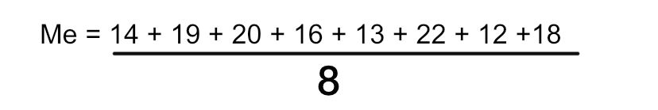
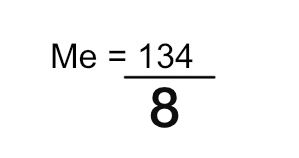

Média
Por que a Média?
Como tenho dito no outro conteúdo também, na minha visão a Média também é muito importante pro resto da vida. São essas pequenas coisas e pequenos aprendizados que irão nos ajudar muito no futuro. Média é um conteúdo super simples e que eu gosto muito, nunca esqueci desde o momento em que eu aprendi.
O que é Média?
A Média é a soma de vários números, e dividir esse resultado pela quantidade de números que foram somados, algo muito simples!
Como calculamos a Média?
Como já expliquei no tópico a cima, iremos somar todos números que nos fora dado e dividí-los pela quantidade de números. Para isso teremos uma fórmula:
Me =
Média
x1, x2, x3,... =
Os números que serão somados
n =
O número de quantos números foram somados
Exemplo
Os estudantes de uma turma de violino apresentam tais idades: 14, 19, 20, 16, 13, 22, 12 e 18
Vamos calcular:


Então a Média que teremos será de:
Me = 16,75
Voltar para a página inicial